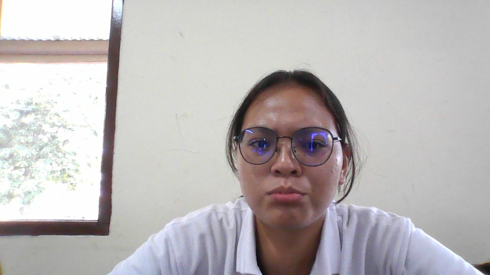

MAHASISWA IT DEL

PROFIL SAYA
- Nama : Chelsea Limbong
- NIM : 41425043
Tentang Saya
Saya adalah mahasiswa IT DEL. Saya adalah mahasiswa yang duduk di bangku Software Engineering. Saya suka makan dan tidur. F1 adalah salah satu olahraga balap favorit saya selain motogp. Saya juga suka bola, ya tentu saja club yang saya suka adalah Real Madrid dan Manchester United. Anyway... HALA MADRID GG MU. Saya dulunya punya mimpi yang sangat besar untuk masuk ke FTTM - ITB, yakni Teknik Pertambangan ITB, namun takdir berkata lain
Email: chelsealimbong@email.com | Telp: +62 819-5244-6621
© Chelsea Limbong. All Rights Reserved.